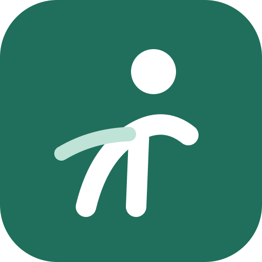

Saltar al contenido

HealthMove
Inicio
Explorar
Mi rutina
Mi perfil
Generar mi rutina
Historial
Ajustes y fuentes
HealthMove
Modo desarrollo: incluye ejercicios
sin revisar
.
Salir
Hay una versión nueva.
Recargar
Cargando…
HealthMove necesita JavaScript para funcionar.
Inicio
Explorar
Mi rutina
Mi perfil